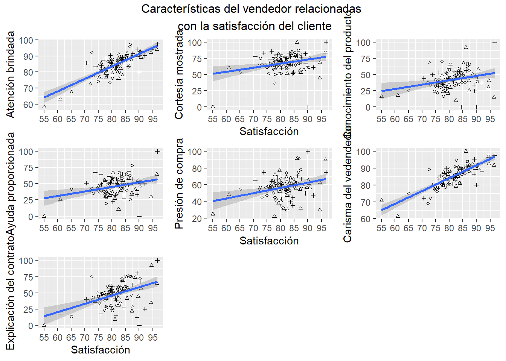
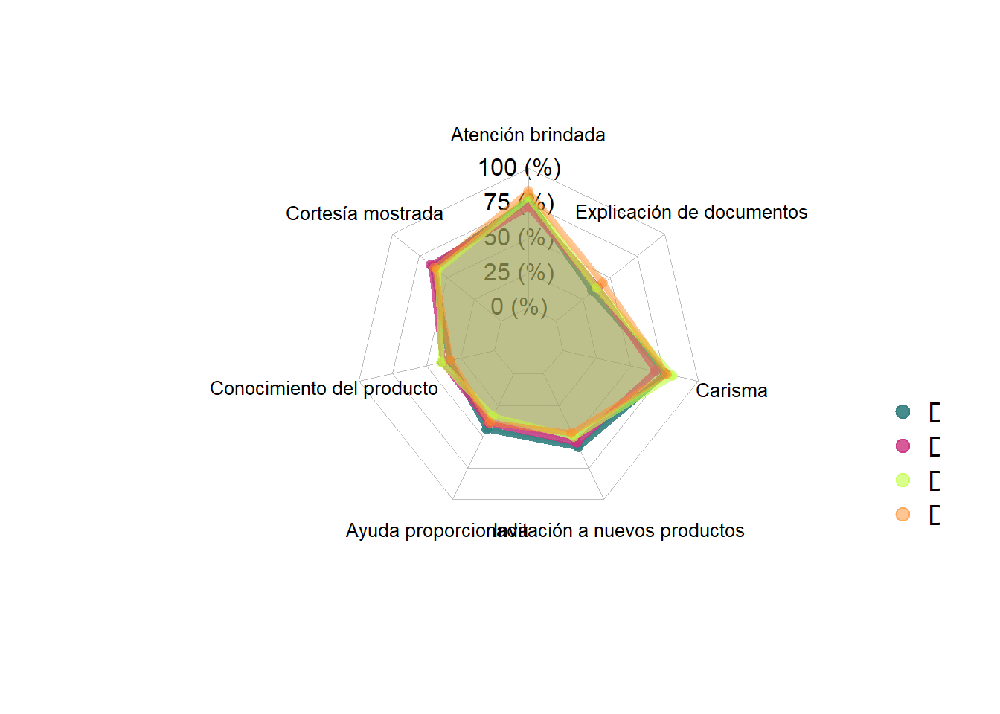

The following show the key analysis of exit surveys which supported the address taken by the learning and development department towards the content of their curses.
Las siguientes diapostivas resumen los hallazgos más importantes que apoyan la dirección que tomaron las estrategias del departamento de entrenamiento con respecto al contenido de sus cursos.
##
## Call:
## lm(formula = VSatisfacciónAcum ~ VAtenciónAcum + VCortesíaAcum +
## VConocimientoAcum + AAyudaNov + VInvitaciónAcum + VEncantoAcum +
## VContratoAcum, data = ventas_servicio)
##
## Residuals:
## Min 1Q Median 3Q Max
## -12.0934 -1.9742 0.1382 1.7657 8.2939
##
## Coefficients:
## Estimate Std. Error t value Pr(>|t|)
## (Intercept) 0.52707 5.79091 0.091 0.928
## VAtenciónAcum 0.43253 0.08639 5.007 2.41e-06 ***
## VCortesíaAcum -0.02991 0.03905 -0.766 0.445
## VConocimientoAcum -0.04597 0.03360 -1.368 0.174
## AAyudaNov 0.03053 0.04034 0.757 0.451
## VInvitaciónAcum 0.03875 0.02958 1.310 0.193
## VEncantoAcum 0.53808 0.08770 6.136 1.75e-08 ***
## VContratoAcum -0.02419 0.02569 -0.942 0.349
## ---
## Signif. codes: 0 '***' 0.001 '**' 0.01 '*' 0.05 '.' 0.1 ' ' 1
##
## Residual standard error: 3.543 on 99 degrees of freedom
## (36 observations deleted due to missingness)
## Multiple R-squared: 0.711, Adjusted R-squared: 0.6905
## F-statistic: 34.79 on 7 and 99 DF, p-value: < 2.2e-16##
## Call:
## lm(formula = VSatisfacciónAcum ~ VAtenciónAcum + VCortesíaAcum +
## AAyudaNov + VInvitaciónAcum, data = ventas_servicio)
##
## Residuals:
## Min 1Q Median 3Q Max
## -14.0759 -2.2905 0.1932 2.2416 8.7940
##
## Coefficients:
## Estimate Std. Error t value Pr(>|t|)
## (Intercept) 17.35425 5.34576 3.246 0.00158 **
## VAtenciónAcum 0.76501 0.07003 10.925 < 2e-16 ***
## VCortesíaAcum -0.06567 0.04339 -1.514 0.13320
## AAyudaNov 0.03756 0.04344 0.865 0.38927
## VInvitaciónAcum 0.03681 0.03372 1.092 0.27754
## ---
## Signif. codes: 0 '***' 0.001 '**' 0.01 '*' 0.05 '.' 0.1 ' ' 1
##
## Residual standard error: 4.101 on 102 degrees of freedom
## (36 observations deleted due to missingness)
## Multiple R-squared: 0.601, Adjusted R-squared: 0.5853
## F-statistic: 38.4 on 4 and 102 DF, p-value: < 2.2e-16##
## Call:
## lm(formula = VSatisfacciónAcum ~ VConocimientoAcum + VContratoAcum,
## data = ventas_servicio)
##
## Residuals:
## Min 1Q Median 3Q Max
## -18.8992 -3.0474 -0.3702 2.5691 16.5323
##
## Coefficients:
## Estimate Std. Error t value Pr(>|t|)
## (Intercept) 73.46768 1.80681 40.662 < 2e-16 ***
## VConocimientoAcum 0.02584 0.04109 0.629 0.531
## VContratoAcum 0.14563 0.03533 4.122 7.57e-05 ***
## ---
## Signif. codes: 0 '***' 0.001 '**' 0.01 '*' 0.05 '.' 0.1 ' ' 1
##
## Residual standard error: 5.737 on 104 degrees of freedom
## (36 observations deleted due to missingness)
## Multiple R-squared: 0.2039, Adjusted R-squared: 0.1886
## F-statistic: 13.32 on 2 and 104 DF, p-value: 7.099e-06The regression line was used to define the relation between satisfaction and each personality trait.
## `geom_smooth()` using formula 'y ~ x'## Warning: Removed 36 rows containing non-finite values (stat_smooth).## Warning: Removed 36 rows containing missing values (geom_point).## `geom_smooth()` using formula 'y ~ x'## Warning: Removed 36 rows containing non-finite values (stat_smooth).
## Warning: Removed 36 rows containing missing values (geom_point).## `geom_smooth()` using formula 'y ~ x'## Warning: Removed 36 rows containing non-finite values (stat_smooth).
## Warning: Removed 36 rows containing missing values (geom_point).## `geom_smooth()` using formula 'y ~ x'## Warning: Removed 36 rows containing non-finite values (stat_smooth).
## Warning: Removed 36 rows containing missing values (geom_point).## `geom_smooth()` using formula 'y ~ x'## Warning: Removed 36 rows containing non-finite values (stat_smooth).
## Warning: Removed 36 rows containing missing values (geom_point).## `geom_smooth()` using formula 'y ~ x'## Warning: Removed 36 rows containing non-finite values (stat_smooth).
## Warning: Removed 36 rows containing missing values (geom_point).## `geom_smooth()` using formula 'y ~ x'## Warning: Removed 36 rows containing non-finite values (stat_smooth).
## Warning: Removed 36 rows containing missing values (geom_point).
To learn the best practices used by the sales team, we identify in a map the places where satisfaction scores higher (code can be found at CVPVentasServiciosMap.R).
Satisfaction scores map
Furthermore, we inspect the scores in some of the dealerships to choose the ones to visit/call and get qualitative information from them.
